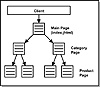

|
Developing Java Enterprise Applications
by Stephen Asbury ; Scott R. Weiner
Wiley Computer Publishing, John Wiley & Sons, Inc.
ISBN: 0471327565 Pub Date: 02/01/99

|
CHAPTER 11
A JavaServer Page Online Store
One large and growing sector of Web applications is the online store—a Web site for electronic commerce, also called e-commerce. This chapter sets up a simple online store created with JavaServer Pages. This example also uses the AdLinkRotatorServlet example from Chapter 7, “Programming Servlets,” and Chapter 10, “Creating JavaServer Pages.” This example should not be considered a complete commercial product, but instead the beginning of one. Some of the decisions made when creating this example were for educational reasons. For example, the HTML pages describing products are based on images and HTML pages that were easily available. Some pages have added features that are not provided on others, so the discussion focuses on a particular concept. That said, this is a nice, simple online store, with the restriction: You can’t really buy anything.
This chapter is organized into three parts. The first part looks at how the site is organized and what the requirements are. The second part looks at the two main JSP used to create the site. The final part looks at the shopping cart servlet created for the site. As with all of the examples in this book, the HTML and code for this example are available on the CD-ROM.
How the Store Works
The online store needs to be dynamic and have the ability to easily add items for sale. At the same time, it would be useful to categorize the items so that the customer doesn’t have to look through long lists. Finally, the store should provide a shopping cart for keeping track of the customer’s selected items.
To make this example work, an index.jhtml or home page is created for the site, which dynamically displays a list of categories based on the directories contained in the site’s main directory on the Web server. For example, on the CD-ROM is a directory containing the main page and two subdirectories, one called Books and the other called Courses. The main page displays two links, one to Books/index.jhtml and one to Courses/index.jhtml.
Another category is planned for inside each JSP. This category page performs a similar function as the main page by dynamically listing the files in the directory. When a category index page is accessed, it looks at the available HTML pages in its directory and creates them as a list of links. Each of these pages should represent a single product for sale in that category. This organization is illustrated in Figure 11.1.
The pages for each product on the site are simple HTML pages rather than servlets. This improves performance; the site might have thousands of products, and you don’t want to have thousands of servlets sitting in memory. Instead, JSPs are used only for the main page and categories.
The shopping cart is a servlet instead of a JSP because it will output a variety of messages based on the user’s actions. (The example in Chapter 25, “A Four-Tier Online Store,” extends this servlet to access an Enterprise JavaBean.) The servlet outputs a fair amount of HTML and could certainly be changed to a JSP instead. The shopping cart uses parameters to tell it what you want to do, including adding and removing items as well as simply displaying the cart. A mechanism for e-commerce is not implemented in this example, because this capability can be very site dependent and is outside the scope of the current discussion. On a real site, you might access a database, create an e-mail invoice, or use some other mechanism for placing the order.

Figure 11.1 Example online store organization.
The Main Page
The goal of the main page is to display a list of the available categories, as pictured in Figure 11.2. The categories are determined by looking at the subdirectories in the main pages directory. Figure 11.2 shows how these directories are organized on the CD-ROM.
The first step in creating the main page is to define some instance variables and a method for loading the list of categories. For simplicity, this example stores the categories in a vector, where each element in the vector is the string name for the category and corresponding directory. To load the vector, a method called initCategories is called that takes a directory path and loads the categories for that path. The JSP creates the path from the request URL using the HTTPRequest object’s getRealPath method. Because the initCategories method is outside the generated servlet’s service method, the definition for it is placed between <java> tags with a type=class.
Figure 11.2 The main page.
<java type=class>
Vector categories;
String docRoot;
public void initCategories(String rt)
{
File rootDir=null;
String[] files;
int i,max;
File curFile;
docRoot = rt;
categories = new Vector();
try
{
rootDir = new File(docRoot);
if(!rootDir.isDirectory())
rootDir = new File(rootDir.getParent());
if((rootDir!=null) && rootDir.exists())
{
files = rootDir.list();
max = files.length;
for(i=0;i<max;i++)
{
curFile = new File(rootDir,files[i]);
if(curFile.exists()
&& curFile.isDirectory())
{
categories.addElement(files[i]);
}
}
}
}
catch(Exception exp)
{
categories.removeAllElements();
}
}
</java>
The next step is to define the HTML for the page header and the point where the categories should be output. Notice in the HTML code that follows, the servlet AdLinkRotatorServlet is reused, as defined in Chapter 10. This servlet dynamically rotates through advertisements displayed on this Web page. The image directory is hard coded to the directory where the ads are located. You should change this to reflect the directory in which your ads are stored on your Web server. Otherwise, this is straight HTML.
<HTML>
<HEAD>
<TITLE>
Stuff 4Sale OnLine
</TITLE>
</HEAD>
<BODY TEXT="#000000" BGCOLOR="#FFFFFF" LINK="#FF0000" VLINK="#800080">
<CENTER>
<TABLE WIDTH=500 BORDER=0>
<TR>
<TD>
<CENTER>
<servlet name="AdLinkRotator"
code="AdLinkRotatorServlet"
imagedir="d:\\java\\jws1.1\\public_html\\ads"
imageroot="/ads">
</servlet>
<BR>
<H3>Welcome to Steve and Scott's<H3>
<H1>Stuff 4Sale OnLine</H1>
<HR>
</CENTER>
Please choose a category to find available products.
<UL>
The last line of this HTML starts an unordered list. This list displays each of the categories and closes in the HTML page’s footer.
The next step is to make sure the category list is initialized with the correct directories. Use the requestURI to get the directory that the main page is in. Then, using the initCategories method, load the categories. Notice that this is done only once. In case the directories change, a reload time can be set in the category index page described later in this chapter.

|


){kind=link}
){kind=link}
){kind=link}
){kind=link}